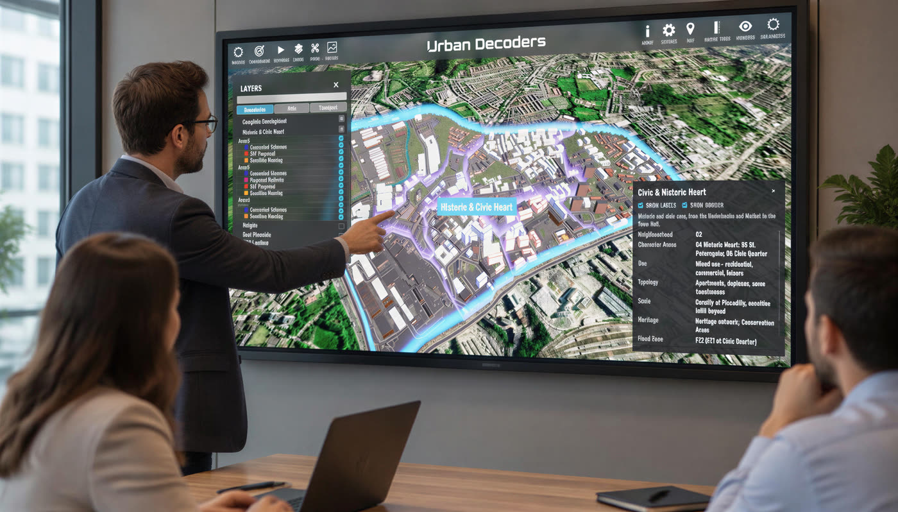

Drag the four handles onto the corners of the glass — top-left, top-right, bottom-right, bottom-left, in that order. Arrow keys nudge the focused handle (shift = 10×). Copy the attribute into your .screen--pin block.
.screen--pin
